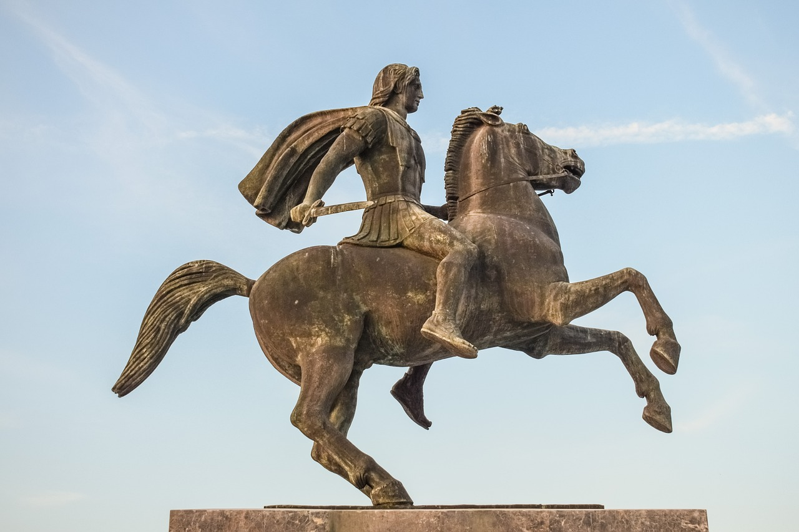

Alexander the Great
The conqueror the world has never seen

Sculpture of Alexander the Great in Thessaloniki, Greece
Time line of Alexander the Great's life
- 356 B.C. - Born at Pella, Macedonia, to King Philip II and Olympias
- 338 B.C. - Battle of Chaeronea
- 336 B.C. - Alexander becomes ruler of Macedonia
- 334 B.C. - Wins Battle of the Granicus River against Darius III of Persia
- 333 B.C. - Wins Battle at Issus against Darius
- 332 B.C. - Wins siege of Tyre; attacks Gaza, which falls
- 331 B.C. - Founds Alexandria. Wins Battle of Gaugamela against Darius
- 330 B.C. - Sacks and burns Persepolis; trial and execution of Philotas; assassination of Parmenion
- 329 B.C. - Crosses Hindu Kush; goes to Bactria and crosses the Oxus river and then to Samarkand.
- 328 B.C. - Kills Black Cleitus for an insult at Samarkand
- 327 B.C. - Marries Roxane; begins march to India
- 326 B.C. - Wins Battle of river Hydaspes against Porus; Bucephalus dies
- 324 B.C. - Marries Stateira and Parysatis at Susa; Troops mutiny at Opis; Hephaestion dies
- 323 B.C. - Dies at Babylon in the palace of Nebuchadnezzar II
"Through every generation of the human race there has been a constant war, a war with fear. Those who have the courage to conquer it are made free and those who are conquered by it are made to suffer until they have the courage to defeat it, or death takes them." - Alexander the Great
Check this Wikipedia page to learn more about this incredible human being.